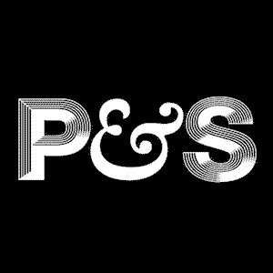
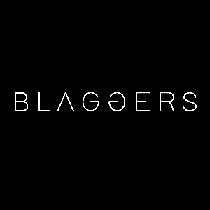
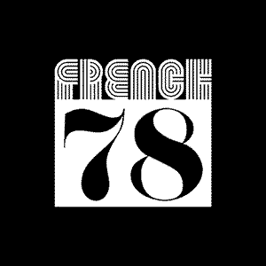

Buffalo Studio is a world-class analog recording studio in Sheffield, South Yorkshire, built around a 48-channel SSL 4000G+ console and a curated collection of rare vintage instruments and outboard gear. Designed for artists who want to capture something real — warm, organic, and alive — the studio offers two distinct rooms: an intimate live room built for sound, and a meticulously treated control room engineered for clarity. Whether you're cutting a full band, or a solo record, Buffalo delivers the analog depth that can't be replicated in the box.
Services: full-band recording, mixing, record production, and overdub sessions for artists across Sheffield, Leeds, Manchester, Nottingham and the wider UK. We track drums, guitars, strings, brass, vocals — then mix them back through the SSL for depth you can't fake in the box.


